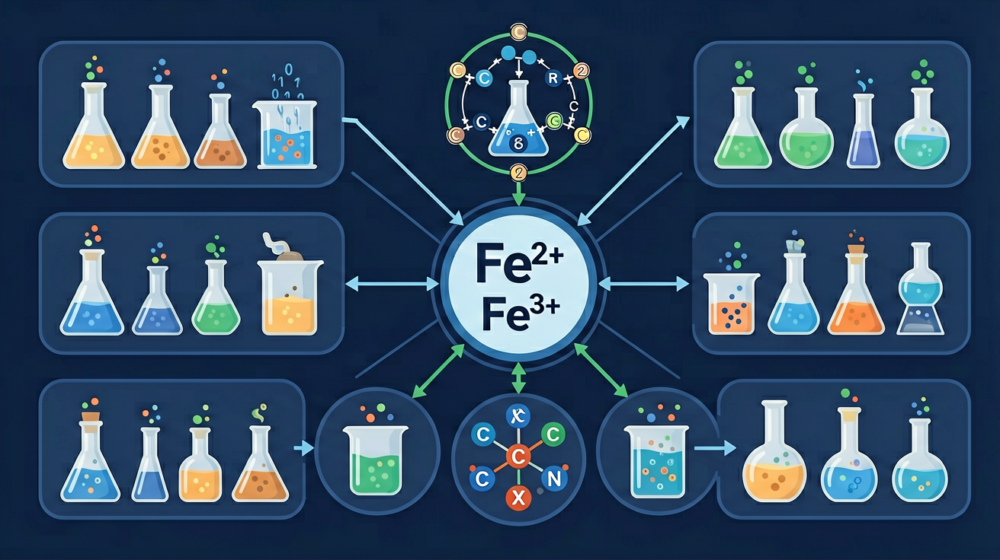

真实情境
古建筑修复中的铁锈处理
故宫修复团队发现古建筑铁质构件表面同时存在红棕色和黑色锈层。检测显示红棕色锈层主要含Fe₂O₃，黑色锈层含Fe₃O₄。修复方案需将不稳定铁锈转化为致密保护层，过程中涉及Fe²⁺与Fe³⁺的转化控制。
已有经验
学生已掌握铁单质与酸反应、铁离子检验方法
真正卡点
Fe²⁺被氧化与Fe³⁺被还原的条件差异
本课任务
设计实验证明Fe²⁺与Fe³⁺相互转化条件
怎样用颜色、沉淀和价态变化判断铁元素处在哪一种状态？

先选一个你关心的问题。后面的例子、提示和 AI 学伴都会围绕这个问题来帮你推进。
选择或输入后，本课会围绕你的问题展开。
故宫修复团队发现古建筑铁质构件表面同时存在红棕色和黑色锈层。检测显示红棕色锈层主要含Fe₂O₃，黑色锈层含Fe₃O₄。修复方案需将不稳定铁锈转化为致密保护层，过程中涉及Fe²⁺与Fe³⁺的转化控制。
学生已掌握铁单质与酸反应、铁离子检验方法
Fe²⁺被氧化与Fe³⁺被还原的条件差异
设计实验证明Fe²⁺与Fe³⁺相互转化条件
铁常见 +2 和 +3 价。还原性：Fe>Fe²⁺；氧化性：Fe³⁺>Fe²⁺。Fe 遇强氧化剂（如 Cl₂）生成 Fe³⁺；Fe 与弱氧化性酸或 Fe³⁺ 反应可得 Fe²⁺。分析转化时先判断氧化剂还原剂强弱。
下列能把 Fe 直接氧化为 Fe³⁺ 的是？
Fe³⁺ 遇 KSCN 显血红色；Fe²⁺ 不显色，可先用氧化剂转化再检验，或用其他特征反应。Fe²⁺ 易被空气氧化，配制其溶液常加铁钉与酸抑制氧化。颜色：Fe²⁺ 溶液浅绿，Fe³⁺ 溶液黄棕。
检验 Fe³⁺ 常用试剂是？
Fe²⁺ 与碱生成白色 Fe(OH)₂，迅速被空气氧化，经灰绿最终变红棕色 Fe(OH)₃。该现象是 Fe²⁺ 易被氧化的直观证据。书写方程式注意配平电子与氧气。工业与生活中铁的锈蚀也与此类氧化过程相关。
Fe(OH)₂ 在空气中颜色变化顺序是？
本课任务：结合溶液环境理解铁盐水解与检验条件，设计 Fe²⁺/Fe³⁺ 鉴别与相互转化的证据链实验表。
写清自变量、因变量和至少两个保持不变的条件，避免同时改变多个因素后无法归因。
至少记录三组带单位的数据或三个可复查的现象，不用“变大了”“更明显”代替证据。
用本课公式、粒子模型或受力关系解释趋势，并指出结论成立所依赖的模型条件。
换一个参数或真实情境预测结果，再用仿真检验；若不一致，回查变量、单位和边界条件。
铁常见化合价 +2、+3。Fe²⁺ 溶液浅绿，易被氧化为 Fe³⁺；Fe³⁺ 遇 KSCN 呈血红色，可被还原剂（如 Fe、Cu、I⁻）还原为 Fe²⁺。Fe 与弱氧化剂生成 Fe²⁺，与足量强氧化剂（如 Cl₂、浓硝酸等条件）可生成 Fe³⁺。
通过实验探究掌握 Fe²⁺ 与 Fe³⁺ 相互转化的条件，理解氧化还原反应原理在铁元素转化中的应用
向 FeCl₂ 溶液中滴加 KSCN 无明显现象，加入氯水后立即出现血红色，证明 Fe²⁺ 被氧化为 Fe³⁺
先观察溶液颜色（浅绿→黄），再用 KSCN 检验 Fe³⁺，最后用氧化剂/还原剂实现价态转化
忽略酸性条件对 Fe²⁺ 稳定性的影响，未说明需在 HCl 环境中保存 Fe²⁺ 溶液
课堂任务：请用“现象/文本/地图/实验数据 → 关键证据 → 学科解释 → 迁移应用”四步，重写一个关于「铁及其化合物：Fe²⁺ 与 Fe³⁺ 的转化证据链」的新问题。
识别并写出本节核心定义、公式或分类标准。
把本课标准用于一个实验数据或真实生活场景。
设计一个反例，说明常见错误为什么站不住脚。
如果你能解释“怎样用颜色、沉淀和价态变化判断铁元素处在哪一种状态？”，这节课就真正过关了。
检验 Fe³⁺：KSCN；检验 Fe²⁺：先加 KSCN 无血红，再加氯水变血红。转化：Fe³⁺⇌Fe²⁺ 用氧化剂/还原剂控制。注意水解与保存（Fe²⁺ 溶液常加铁钉和酸）。
常见误区：常见误区是看到浅绿色就认定只有 Fe²⁺ 而无 Fe³⁺，或配制 FeSO₄ 不防氧化。
向某溶液加 KSCN 显血红色，说明可能含？
记忆锚点：铁看两价三价：二价易被氧化，三价遇 SCN⁻ 血红，遇 OH⁻ 红褐沉淀。
易错提醒：常见错误：把 Fe²⁺ 和 Fe³⁺ 的颜色、沉淀现象混用；判断时必须同时看价态和试剂。
不要只看结论。动手改变变量后，再用一句话解释画面为什么变了。